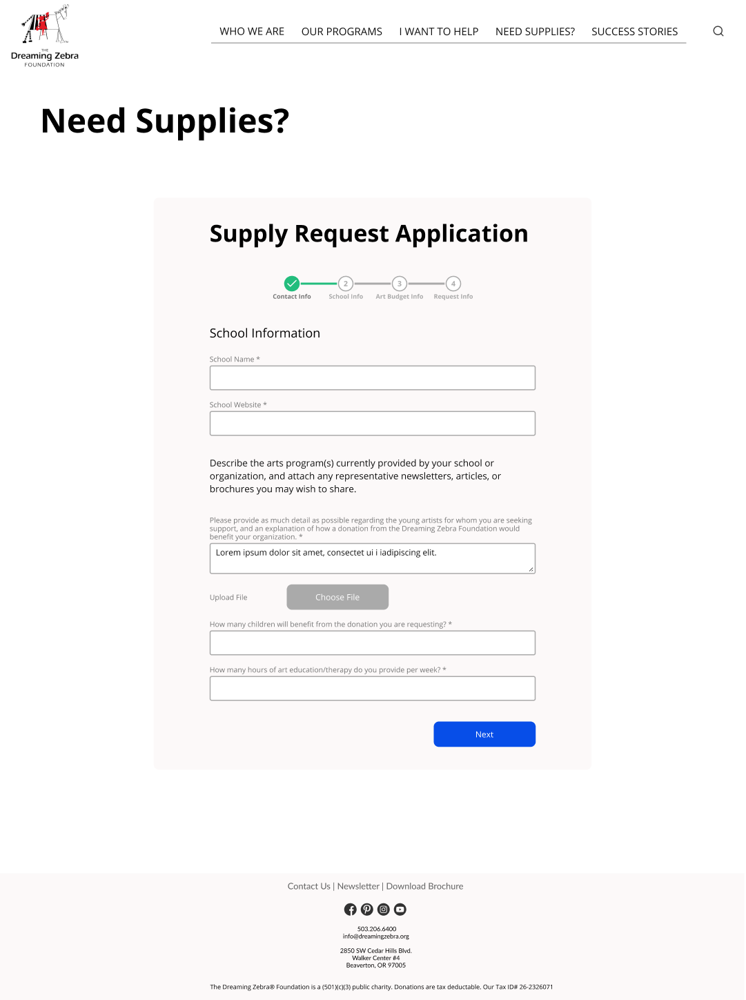
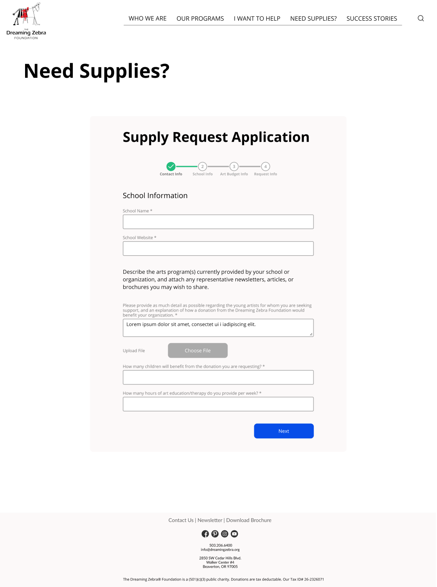

Home
Work
About
Social
Contact
Home
Work
About
Social
Contact
Working with a group of fellow students, I helped redesign the website for The Dreaming Zebra Foundation, a non-profit organization whose mission is to provide art & music supplies to underprivileged children. We conducted user research to guide our design, which was focused on streamlining the user journeys for both donating and applying to become a beneficiary.
One of the group projects in my UI/UX boot camp program was to redesign a non-profit organization's website in three weeks. Our group chose to redesign the website of The Dreaming Zebra Foundation, a non-profit based in Portland, OR whose mission is to provide donations of art supplies or musical instruments for underprivileged children to learn about art or music.
In order to design with a human-centered approach, our group chose to follow the Double Diamond design model and divided our design process into four phases: Discover, Define, Develop, and Deliver.

In order to understand what the UX/UI issues were on The Dreaming Zebra Foundation's website, we began by performing a heuristic evaluation of their website. This evaluation helped us determine specific areas of improvement that could be addressed in a redesign. We found that The Dreaming Zebra Foundation website's current design was very heavy on text and images, and lacked a clear information hierarchy that would guide users to the information that is most important to them. We also found that the forms on the website were too long and would likely discourage users from filling them out.
We also wanted to better understand the user journeys of someone who contributes to The Dreaming Zebra Foundation, as well as someone who benefits from it. Due to the pandemic limiting The Dreaming Zebra Foundation's philanthropic activities, finding users with direct experience with the foundation was difficult and we instead based our user research on surveys and interviews with users who potentially could either contribute or benefit from The Dreaming Zebra Foundation. For our user interviews, we also focused on interviewing teachers who were interested in both contributing to and benefiting from The Dreaming Zebra Foundation.

We also wanted to better understand the user journeys of someone who contributes to The Dreaming Zebra Foundation, as well as someone who benefits from it. Due to the pandemic limiting The Dreaming Zebra Foundation's philanthropic activities, finding users with direct experience with the foundation was difficult and we instead based our user research on surveys and interviews with users who potentially could either contribute or benefit from The Dreaming Zebra Foundation. For our user interviews, we also focused on interviewing teachers who were interested in both contributing to and benefiting from The Dreaming Zebra Foundation.
Through our user research, we found that most people prefer to interact with non-profit organizations either completely through the website, or in-person after getting information from the website. The teachers we interviewed preferred an application process for benefiting from a non-profit organization that was completely digital, as they disliked their experiences filling out paper forms when working for their school districts. They also expressed a preference for shorter, easier to fill out digital forms, as their busy schedules as teachers left little free time.
For survey respondents who had experience contributing to non-profit organizations, over 80% of them responded that they preferred contributing to non-profit organizations by making monetary donations, rather than donating their time.
I prefer digital forms, instead of forms on paper.
I would just like an online site where I can request supplies from.
We then used the responses from our user interviews with teachers, along with the responses from our survey, to develop a user persona that would best represent the goals and frustrations of a user who is looking to use The Dreaming Zebra Foundation's website in order to contribute to the foundation, or to benefit from it.
The persona we developed was Jenny, a kindergarten teacher whose goals are to request for a donation of art supplies from The Dreaming Zebra Foundation, as well as possibly contribute unused art supplies to the foundation once the school year has ended.

From our survey responses and our user interviews with teachers, we defined our problem statement for The Dreaming Zebra Foundation website, so we could then target and develop a solution for.
We discovered that tired, underappreciated teachers who work for school districts with limited budgets and are looking to benefit from The Dreaming Zebra Foundation need to easily find what support they can get from the organization, and be able to request a donation so they can help teach art classes to children.
Using our problem statement as a guide, we set out to develop solutions that incorporated insights from our user interviews and survey results, as well as taking into account the goals and frustrations of the user persona that we developed.
In order to develop a clearer, easier to understand information hierarchy, we performed a card sorting exercise to develop a new information architecture and site map for The Dreaming Zebra Foundation website.

We then designed a low-fidelity clickable prototype of the website with the goal of making it easier for users to either contribute to The Dreaming Zebra Foundation, or apply to benefit from it. Our design aimed to decrease the amount of text on the home page and in the forms in order to help users more quickly find ways to accomplish their goals. We made the prototype clickable in order to test the usability of various user journeys that we had previously identified as part of our problem statement.
 

Once the low-fidelity clickable prototype was completed, we iterated its design through usability testing. We focused on making sure that users could complete various tasks.
After testing, our prototype's iterations added a value statement on the home page, along with paring down the questions on the donation request form.
Usability Testing tasks:
- Understand what the mission of The Dreaming Zebra Foundation is.
- Quickly find how to contribute art supplies.
- Quickly find how to request an art supply donation.
- Quickly fill out the form to request a donation.
With a finalized low-fidelity, clickable prototype complete, we began the process of designing a high-fidelity clickable prototype. Our group chose to begin with developing a style guide, and then creating components for the website as part of an atomic design approach.
With our components designed, we developed the rest of our high-fidelity prototype, with extra attention paid on designing the home page, the forms used to contribute to The Dreaming Zebra Foundation, and the forms for requesting a donation of art supplies.


Once our high-fidelity, clickable prototype was complete, we again iterated its design through additional usability testing. Some changes that were implemented were increasing the spacing between elements on the home page to help with visual hierarchy, as well as making the value statement more prominent.

We also developed a mobile prototype of the website to ensure accessibility for users who primarily access the internet through their phones.


At the end of the three week design period, our redesign of The Dreaming Zebra Foundation's website solved the problem statement that we had earlier defined. Our usability testing of our high-fidelity prototype showed that users were more easily able to understand the mission of the foundation, as well as quickly find and fill out the forms to both contribute to the foundation, and request donations from it.